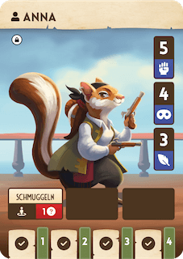

Prolog
1813
Amerika befindet sich im Krieg mit Britannien. Die instabile politische und wirtschaftliche Lage begünstigt zügellose Piraterie im Golf von Mexiko. Spione und Saboteure auf beiden Seiten des Krieges nutzen die Kontakte zu den Piraten, um an Informationen zu kommen und wertvolle Güter zu schmuggeln.
In der Rattuga Bucht, ganz in der Nähe von New L‘Oreans wächst ein Piratenimperium heran. Es wimmelt dort nur so von arglistigen Nagern, Reptiliensöldnern und Schurken aller Art. Rattugas heimtückische Bucht bietet die perfekte Umgebung, um gekaperte Schiffe unbemerkt zu beherbergen …. und ihre verborgenen Nebenflüsse sind ideal, um Schmuggelware heimlich in die Stadt zu schaffen.
Als aufstrebende Schmuggler im Untergrund von New LʼOreans, seid ihr jederzeit auf der Suche nach Möglichkeiten, eure Taschen zu füllen.
Heute Abend treibt es euch ins „Coquets“ – ein schäbiges Tanzlokal in einem der übelsten Viertel der Stadt. Dort kommt ihr – umgeben vom dröhnenden Takt des Two Steps – ins Gespräch mit dem schlauen Jean und dem rücksichtslosen Pierre. Sie sind die berüchtigten Lafayette-Brüder. Diese Zwillingsratten haben große Macht in der Rattuga Bucht, das wisst nicht nur ihr.
Eure Kühnheit zahlt sich aus und ihr könnt einen offenbar lukrativen Job an Land ziehen. Jean zieht eine abgenutzte Karte hervor und tippt mit seinem Finger auf den Standort einer alten, nahezu komplett zerstörten Festung auf einer kleinen Insel in Rattuga ..."
Sobald ihr bereit seid...
Der Prolog schaltet neues Material für euch frei:
-
Neue Charaktere
Euch stehen 2 neue Charaktere zur Verfügung: ANNA und SAMUEL. Übermalt auf beiden Karten die Schlösser, indem ihr die Kreise ausmalt.
 -
Neue Karte
Euch steht nun die FESTUNG eures Piratenimperiums zur Verfügung. Übermalt das Schloss auf der Seite der Festung.